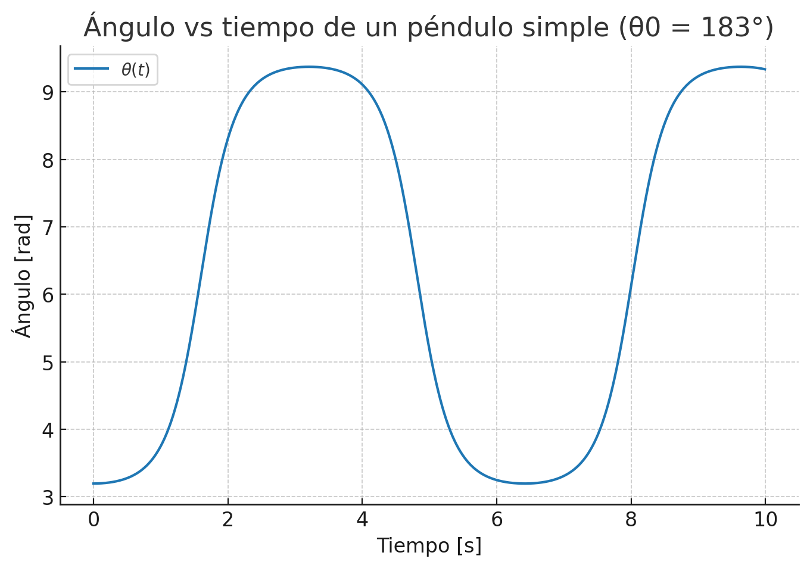

Análisis Experimental y Teórico del Péndulo Doble
Caos determinista y Mecánica Lagrangiana
Caos Determinista ⇢ Simulación + Experimento
Sistema 1
Sistema 2
Simulación: Energía mecánica

\(E = T + V \;\; \Rightarrow \;\; \text{Disipación}\)
Experimento: Energía mecánica

\(E = T + V \;\; \Rightarrow \;\; \text{Disipación real}\)
Péndulo simple: Ángulos en el tiempo
\(\theta_1(t), \theta_2(t) \;\; \sim \sin(\omega t)\)
Simulación: Ángulos en el tiempo

\(\theta_1(t), \theta_2(t) \;\; \not\sim \sin(\omega t)\)
Experimento: Ángulos en el tiempo
\(\theta_1(t), \theta_2(t) \;\; \not\sim \sin(\omega t)\)
Péndulo simple
Un sistema NO caótico
Sistema 1: Espacios de fase
.png)
.png)
.png)
\((\theta, \dot{\theta}) \;\; \Rightarrow \;\; \text{trayectorias divergentes}\)
Sistema 2: Espacios de fase
.png)
.png)
.png)
\((\theta, \dot{\theta}) \;\; \Rightarrow \;\; \text{trayectorias divergentes}\)
Conclusiones
- ➤ El péndulo doble es un sistema caótico: pequeñas variaciones iniciales producen divergencias significativas en el comportamiento a largo plazo.
- ➤ Las simulaciones y experimentos concuerdan cualitativamente, mostrando las mismas tendencias pese a las diferencias cuantitativas (ruido, fricción, amortiguamiento).
- ➤ El formalismo lagrangiano permite describir el sistema y derivar las ecuaciones de movimiento que explican esta dinámica caótica.
- ➤ Los resultados validan la idea de caos determinista: las trayectorias están gobernadas por leyes físicas precisas, pero son extremadamente sensibles a las condiciones iniciales.